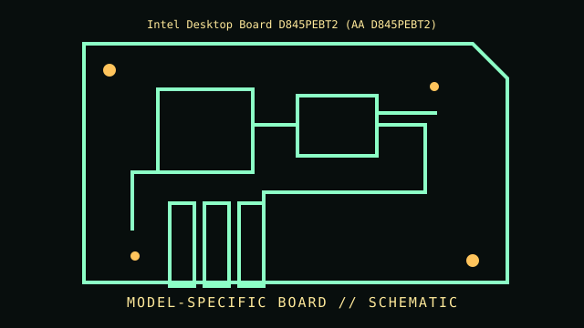

[ INDIVIDUAL COMPONENT // MOTHERBOARDS ]
Intel Desktop Board D845PEBT2 (AA D845PEBT2)
Socket 478 / Intel 845PE, 2002–2003. This entry documents one exact board model/revision; its specifications are not interchangeable with similarly named variants.

REVISION WARNING: Confirm the PCB silk-screen, assembly/AA code and firmware ID on the actual board. Where documentation does not identify one PCB spin, this record states the exact documented model and explains the revision distinction below.
Specifications
| Exact model / revision | Board model D845PEBT2; match the complete AA/board revision printed on the PCB |
|---|---|
| CPU / socket | Socket 478 Pentium 4/Celeron supported by the exact board AA and BIOS; do not infer Prescott support |
| Chipset / platform | Intel 845PE northbridge + ICH4 |
| Memory | DDR 200/266/333 SDRAM, three DIMM sockets; capacity and module density are manual-specific |
| Form factor | ATX |
| I/O and expansion | AGP 4x, five PCI, IDE/ATA, floppy, USB 2.0, integrated 10/100 Ethernet and audio |
| Firmware compatibility | Intel desktop-board BIOS; CPU recognition/support depends on AA number and BIOS release |
Compatibility and revision pitfalls
Intel published separate AA/board revisions and processor qualification lists. The required AA number is on the PCB; D845PEBT2 look-alike/retail boards must not be assumed to share VRM, BIOS or CPU support. Verify the exact support list before installing a 533 MHz FSB processor.
Socket fit alone is not proof of support. Confirm the manufacturer CPU support list, the board's minimum BIOS, memory population table, and exact chassis/power requirements before operation.
Preservation notes
Record AA number and BIOS ID, keep original Intel recovery/BIOS files, and photograph DIMM/AGP configuration. Check Socket 478 pins and capacitors around CPU VRM; these boards may have aging electrolytics.
Record provenance, date/serial codes, board and firmware revision, known repairs and test conditions. Photograph labels and connectors before cleaning or component removal; retain original firmware and configuration data when possible.
Sources & further reading
- Intel Desktop Board D845PEBT2 Product Guide — archived original scanArchived product guide for this exact board model; use the printed AA number to select the matching processor/memory tables.
- Intel D845PEBT2 processor and BIOS support — archived referenceIntel board-support record; BIOS revisions and compatibility are AA-specific. Intel may restrict access to obsolete content.
Manufacturer manuals, CPU lists and archived primary documents take precedence over reseller summaries. If an archived support page omits a revision-specific file, do not assume another revision's firmware is compatible.